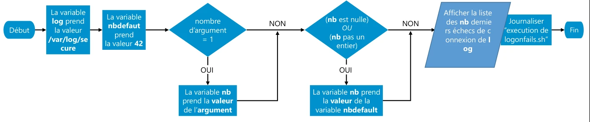

Le texte, les tableaux et le code sont transcrits d’après le PDF de formation. Les sauts de ligne suivent la présentation du support. Les exemples historiques sont commentés dans le cours optimisé.
| Étape | Description |
|---|---|
| Énoncé du problème | Situation initiale ; objectif ciblé |
| Cahier des charges | Détail des contraintes et éléments à prendre en considération |
| Algorithme | Traduction détaillée de l’ensemble des actions menées pour parvenir à l’objectif à atteindre |
| Écriture du script | Code écrit dans le langage Shell par lequel il sera interprété |
ANALYSE
Besoin → Contraintes → Réflexion → Solution.
Cibler, détailler et formaliser le besoin
« Nous avons besoin d’un outil qui affiche les derniers échecs de connexion utilisateur. »
Porteur du besoin
Établir un cadre au projet
Entité chargée de la realisation du script
Établir un cadre au projet
Besoin et contraintes. Porteur du besoin + Entité chargée de la realisation du script → Cahier des charges.
Sur toute la phase d’analyse, de l’expression du besoin à la réalisation de l’algorithme, les échanges sont essentiels entre le porteur du besoin et l’entité chargée de réaliser la solution.
Établir un cadre au projet
Réflexion Déterminer comment parvenir au résultat attendu
S’ensuit un travail d’analyse lors duquel :
Pour poursuivre l’analyse, on réalisera un algorithme du script ou programme envisagé.
Pour qu’un ordinateur réalise une tâche, qu’elle soit basique ou très complexe, il est nécessaire de lui indiquer dans les moindres détails toutes les actions à réaliser.
Un algorithme, c’est une description complète et détaillee des instructions ordonnancées dont l’exécution conduit à un résultat donné.
Un algorithme peut être représenté sous forme de texte. On parle alors de pseudo code. L’utilisation de schéma ou organigramme est aussi adaptée à sa representation.
Les algorithmes sont aussi présents dans nos contextes professionnels. Ils représentent une étape essentielle au processus de création d’un script Shell.
Le pseudo code est utilisé pour la representation textuelle d’un algorithme.
Lancement du script
log ←/var/log/secure
nbdefaut ←42
Si (nombre d’argument passé au script = 1)
alors nb ←argument
Finsi
Si ((nb est nul) OU (nb n’est pas un entier))
alors la nb ←nbdefaut
Finsi
Afficher la liste des nb derniers échecs de connexion de log
Journaliser « exécution de logonfails.sh »
Fin d’exécution du scriptLa représentation sous forme d’organigrammes est basée sur l’utilisation d’un ensemble de symboles.
| Symbole | Signification |
|---|---|
| DÉBUT / FIN | L’ovale matérialise les étapes du début et de fin d’un programme. |
| Flèche | La flèche indique le sens des flux. |
| ACTION | Le rectangle représente la réalisation d’une action ou d’un processus. |
| DÉCISION | Le losange est utilisé pour représenter une décision à prendre ; ou la vérification d’une condition. Il est parfois utile d’utiliser des formes plus complexes quand on a plus de 3 décisions à prendre. |
| ENTRÉE / SORTIE | Entrée / Sortie |
Exemple d’algorithme de l’outil

/var/log/secure.